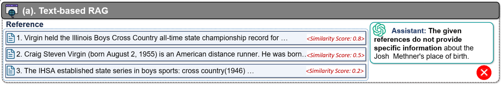
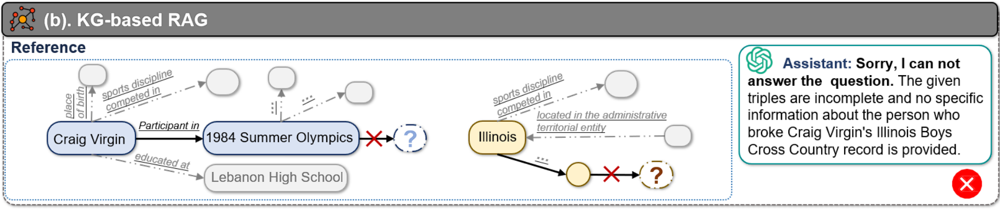
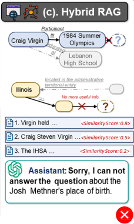
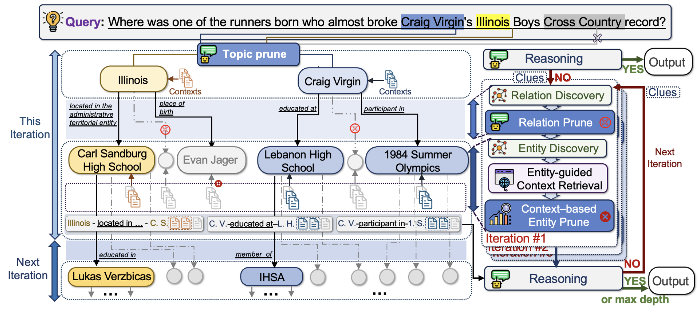
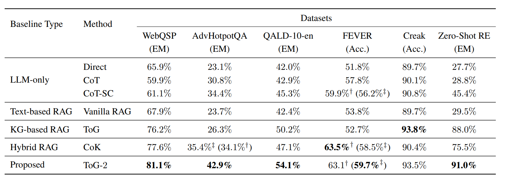
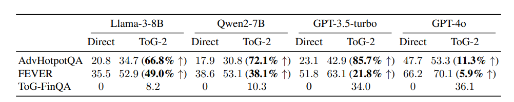
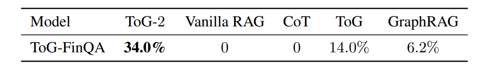
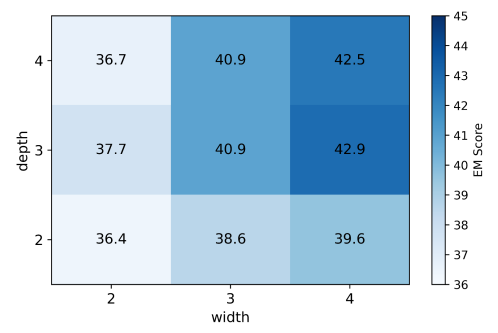

Think On Graph 2.0：Deep And Faithful Large Language Model Reasoning With Knowledge Guided Retrieval Augmented Generation 论文阅读
写在开头
该文是 RAG（Retrieval-augmented generation 检索增强生成）领域的一篇论文，发表于 ICLR 2025.
相关工作
RAG 的定义
RAG（检索增强生成，Retrieval-Augmented Generation） 是一种结合了信息检索技术和大型语言模型（LLM）生成能力的人工智能框架。它的核心思想是：在生成答案之前，先像人类查资料一样，从外部知识库中检索相关信息，然后将这些信息作为“参考资料”提供给大模型，以生成更准确、更可靠、更具时效性的回答。
该方法在近现代被认为是解决 AI 幻觉和领域知识匮乏的重要手段。
RAG 的分类
- 基于文本的 RAG 方法：主要依据问题与文本之间的语义相似性来检索信息。这类方法在捕捉文本间的深层关系方面存在困难，且检索到的文本可能包含冗余内容。
例如：2008年经济衰退和全球金融危机是指代同一件事情的两种表达。

- 基于 KG 的 RAG 方法：将 KG 中的相关结构化知识转化为文本提示，然后输入给 LLM，KG 为大模型在在知识层面引入了可解释性和精确性。但这类方法自然会受到 KG 知识不完整性的困扰。
不完整性有两层含义：KG 设计时就没有为所需要的信息准备实体 / 有实体表达但没收集。

- 混合的 RAG 方法：目标是将 KG 和非结构化数据与 LLM 集成，利用两者的优势来弥补各自的弱点。
HybridRAG 同时从向量数据库和 KG 中检索信息，拼起来给 LLM / 或者GraphRAG 从文档中构建 KG，并实现基于 KG 增强的文本检索。

本文工作
整体理解
本文是一种混合的 RAG 方法，一句话解释是：ToG-2 将基于 KG 的逻辑链与 KG 中实体的非结构化上下文知识结合起来，即通过迭代交替执行知识引导的上下文检索、上下文增强的知识图谱检索，从而更有效地整合和利用异构外部知识。
更具体地来说，ToG-2 整体工作分为 4 步：
- ToG-2 首先从给定的问题中提取实体，作为初始主题实体，随后开始迭代。
- ToG-2 在知识图谱（KG）上选择性地探索当前主题实体的邻近实体，并利用新遇到的实体来优化检索范围。
- ToG-2 通过询问 LLM 和根据实体从相关文档中检索上下文知识、对实体进行排序和筛选。
- ToG-2 将三元组路径和实体上下文提供给大语言模型（LLM）来回答问题，如果收集到的信息不足，则会回到第 2 步重新迭代。
形式表达

初始化
对应于上文的第一步：给定问题 ，ToG-2 提取实体并与知识图谱中的实体做链接。然后，执行主题修剪工作，在这些实体中选择一些实体作为搜索起点，这些实体形成一个主题实体组。
链接、修剪工作都可以通过 LLM 完成，N 也因此由 LLM 定义。
这一步完成后，ToG-2 使用密集检索模型（DRM）从与初始主题实体组 相关的文档中提取前 k 个片段，联合知识图谱直接交给大语言模型（LLM）尝试回答问题。
密集检索模型是一种基于深度学习的现代信息检索技术，它通过将文本（无论是用户查询还是文档）转换为高维向量来实现检索。
这些向量能够捕捉文本的语义特征，使得语义相似的文本在向量空间中距离更近。
与传统的稀疏检索（基于关键词匹配）不同，密集检索能够理解文本的深层含义，从而提高检索的准确性。
图搜索
- 关系发现：从实体组中逐个取出实体在知识图谱中找与之相连的关系，形式表达如下：其中， 表明了关系的方向（指向该实体还是从该实体指出）。
- 关系修剪：从关系发现中得到的所有关系，交给大模型依据问题进行打分，留下可能解决该问题的关系。
文中提供了两种询问方法：逐个取出实体，将其所有关系打包成一个问题让大模型打分。该方法简化了任务，对大模型友好，但效果较差。将所有实体的所有关系打包成一个问题让大模型打分，该方法大幅减少 API 调用，提高推理速度，且大模型可以利用实体间的关系进行打分，但 token 数会挑战大模型的记忆能力。 - 实体发现：从关系修剪中得到的所有关系，联合主题实体组 $\mathcal{E}_{topic}^i$，可以根据三元组构建出全新的实体组 ，构建方程如下：
人话就是：KG 是三元组表达的，，如果 h 在主题实体组中，r 是经过关系修剪后留下来的关系，那么 t 就是实体发现中发现的新实体。
文本检索
图搜索的最后一步，得到了全新实体组 ，根据该实体组中的实体直接检索文本，文本段形成一个集合——文本池。
- 实体引导的文本检索：不直接计算上下文与问题之间的相关性分数，而是找到该文本是由哪个实体找到的，将这个实体在图搜索中的三元组$Pc_{j,m}^i$变成一句话，和文本拼在一起之后再打分，打分使用密集检索模型（DRM）。
目的是保留每个上下文与其对应实体之间的关系。
之后，根据分数选出 Top-K 个文本：
- 基于文本的实体裁剪：根据该 Top-K 个文本，结合分数、实体是否在文本中出现计算出每个实体的最终得分，公式如下：
其中， 是第 k 个文本的分数，，是一个指数函数，用来强化权重（排名第一的文本段比排名第十的重要得多）。指示函数则是代表这个文本段是否是由该实体产生的，有则为 1，没有则为 0。
最后，根据分数选出 Top-W 个实体，这些实体就是下一轮迭代的主题实体组
大模型推理
每一次迭代后，都会将 Top-W 实体三元组 $\mathcal{P}^i$、Top-K 文本段 $Ctx^i$、上一轮线索 作为材料交给大模型进行推理。如果可以得到答案，就输出答案，如果得不到答案，就让大模型总结目前的线索，作为下一轮的输入，直到达到步数限制或者得到答案。
整个迭代过程就是：图搜索、文本检索、大模型推理不断进行
本文实验
实验设置
| 任务类型 | 数据集 | 评估指标 | 知识源 |
|---|---|---|---|
| 多跳知识库问答 (KBQA) | WebQSP, QALD10-en | Exact Match (EM) | Wikidata |
| 复杂文档问答 (QA) | AdvHotpotQA (挑战性子集) | Exact Match (EM) | Wikipedia |
| 槽填充 (Slot Filling) | Zero-Shot RE | Exact Match (EM) | Wikipedia |
| 事实核查 (Verification) | FEVER, Creak | Accuracy (Acc.) | Wikipedia |
| 领域特定问答 (新) | ToG-FinQA (2023年中国财务报告) | 重点考查 | 私有金融 KG |
实验结果

可以看到在很多任务上都达到了 SOTA 的效果。
其他测试
本文通过其他测试得到了几个结果：
- ToG-2 本身具有效果，在小模型上表现突出，证明其补全了小模型较弱的推理性能。

- ToG-2 让大模型在预训练没有见过的领域进行推理时仍然有大幅提升，同样证明方法有效性。

- 迭代次数过多会影响结果，结果呈现先上升后下降，应当选择合适的搜索深度。
- 每轮迭代选取的实体数量存在边际效益递减，应当选择合适的搜索宽度。

- ToG-2 比 ToG-1 运行更快（68.7%）。